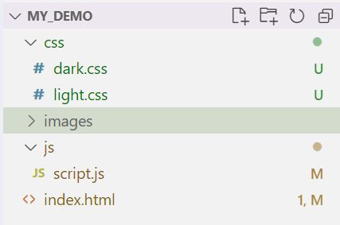

Light & Dark Mode Demo
For this demo, I am going to show you how to switch between stylesheets using a JavaScript button. This can be used for many different things, but in this case, I will use it to switch between light and dark mode styles.
File Structure:
To begin, create your normal folder structure: css, images, and js. Create a index.html page, two stylesheet pages within the css folder: light.css and dark.css, and a script.js page within the js folder. Your file structure should look something like this:
HTML and CSS:
Now, I am just going to build out my webpage as usual.
Personally, I prefer the light theme, so I am going to make my default color theme light by linking the light.css file to the index.html in the head section like this:
link> href="css/light.css" rel="stylesheet"
It is important to remember that for attributes you want to stay the same in both light and dark modes, you must copy their css to both the light.css and dark.css pages. I found it easier for a simple website (such as
this one) to simply use inline css or the style tag wthin the index.html page. This ensures that the attributes you want to stay constant in both the light and dark mode will remain when the theme is toggled. Ideally, the only difference between
the light.css and dark.css pages are the background-color and color attributes.
For example, at the minimum, the light.css page might look like this:
/* light-theme.css */
body {
background-color: lightgray;
font-family: Arial, Helvetica, sans-serif;
}
div {
width: 80%;
background-color: white;
color: black;
}
And the dark.css page might look like this:
/* dark-theme.css */
body {
background-color: darkgray;
font-family: Arial, Helvetica, sans-serif;
}
div {
width: 80%;
background-color: black;
color: white;
}
Obviously, there might be more CSS within div or body tags, but that depends on your website. At the minimum, notice that the colors are inverted on each stylesheet (black vs white in this example). For light or dark mode, this is the most important part! If you do not change the colors between the light.css and dark.css pages, your code will not yield light/dark modes when you click the button.
JavaScript:
Now, to build out the button that switches stylesheets when it is clicked. Before you begin, make sure to link the script.js page at the end of the page. This should go below the last body tag, and before the html tag, like this:
/body>
script> src=js/script.js /script>
/html>
Add a button to your index.html sheet:
button> class="btn-toggle"> Toggle Dark-Mode /button>
Next, move to your script.js folder and use this js code:
const btn = document.querySelector(".btn-toggle");
const theme = document.querySelector("#theme-link");
btn.addEventListener("click", function() {
if (theme.getAttribute("href") == "css/light.css") {
theme.href = "css/dark.css";
} else {
theme.href = "css/light.css";
}
});
If everything is working correctly, your button should "listen" for a click and toggle between the light.css and dark.css stylesheets. Assuming the only thing different between the light and dark stylesheets is the colors, your website should toggle between light and dark upon a click.
Try it with this website!
This website has a light and dark mode using this very technique! Try it out!